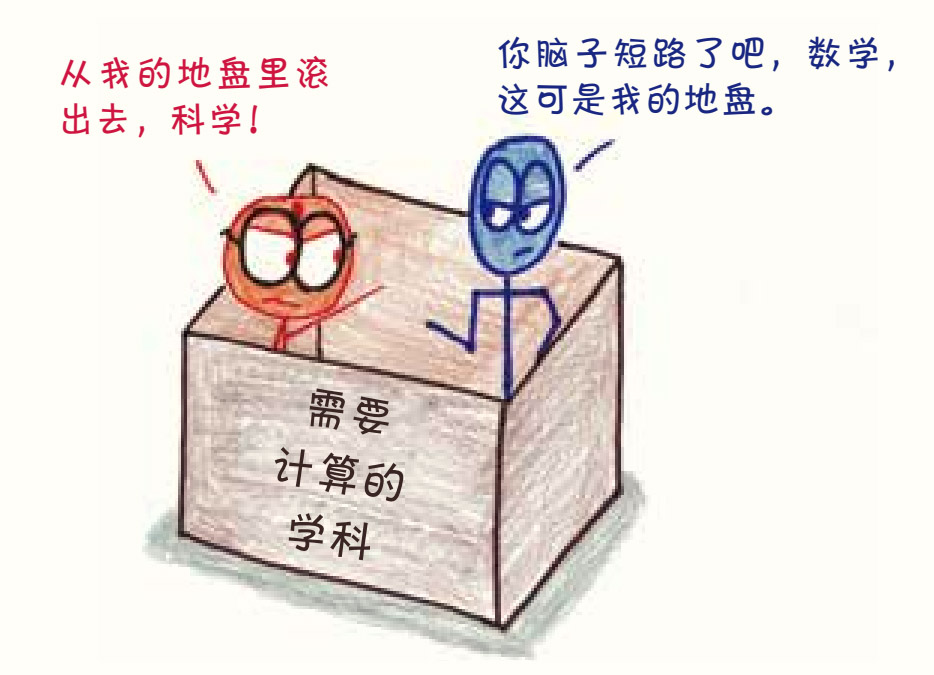
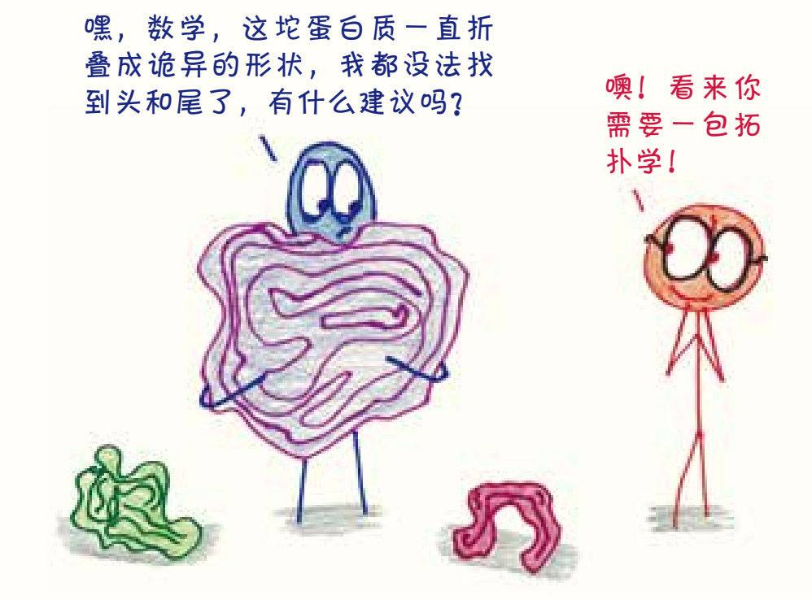
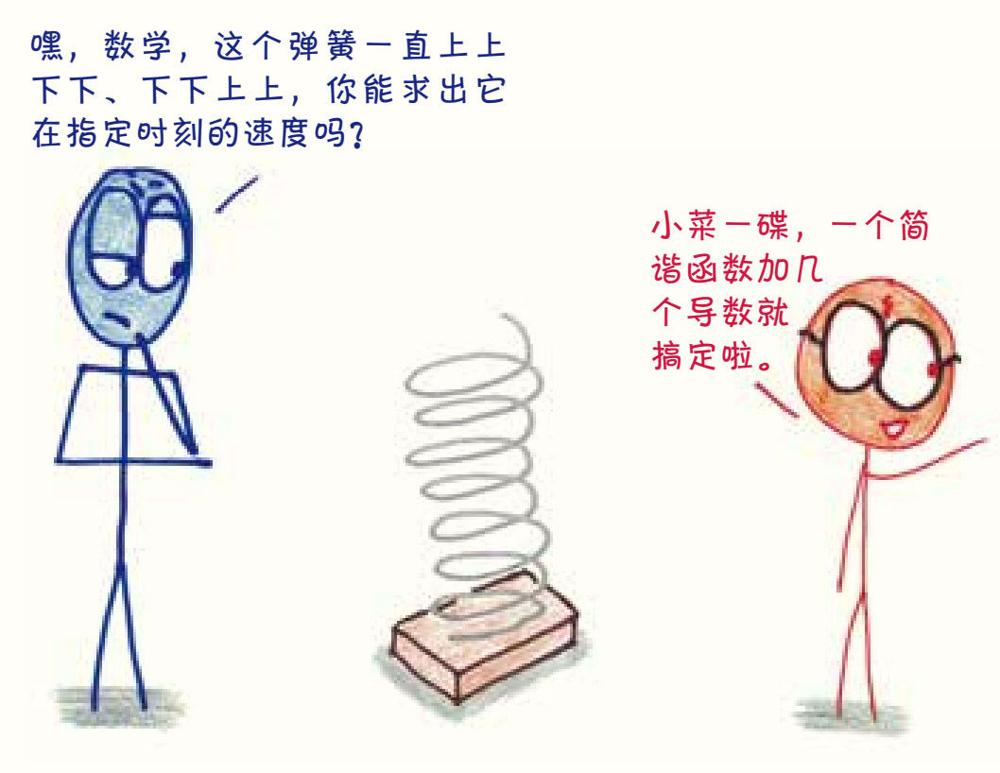
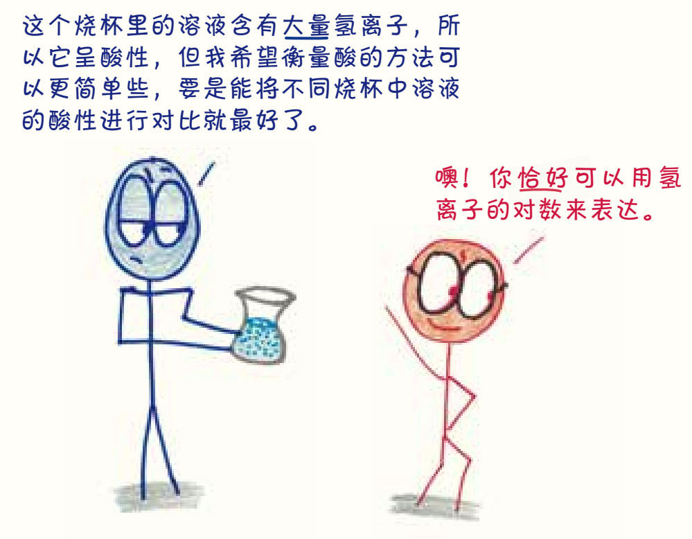
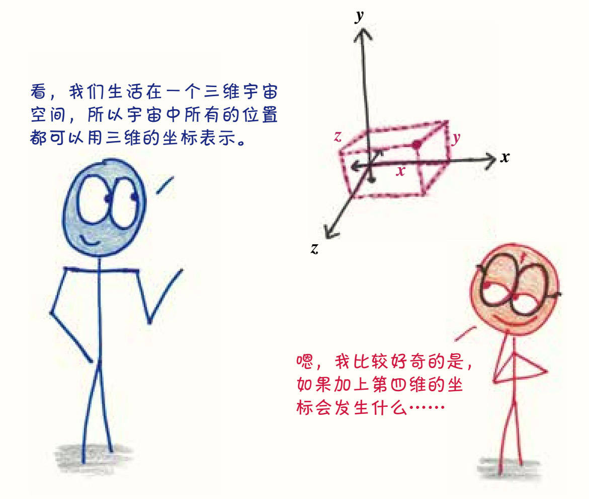
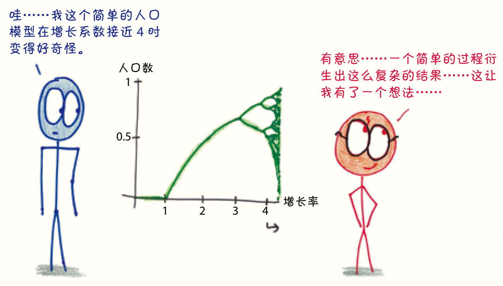
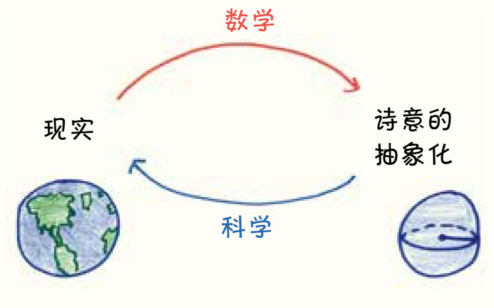
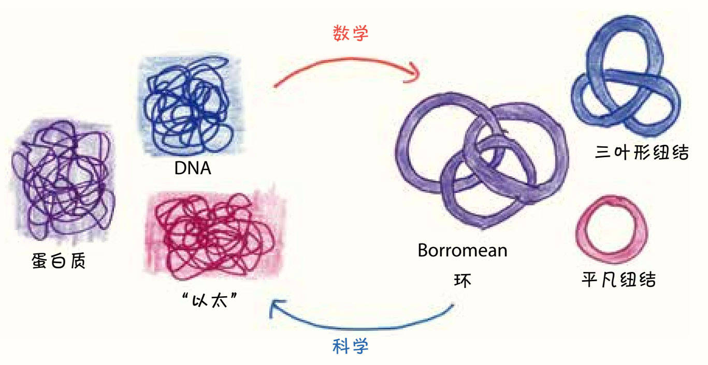
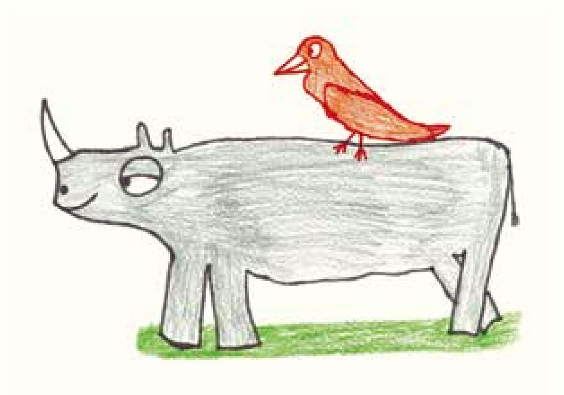
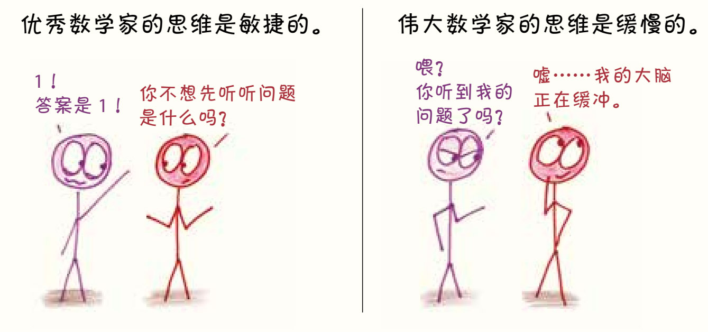

第4章
科学和数学眼中的彼此什么样？
1. 不再是双胞胎了
九年级时，我和好朋友约翰外貌像得出奇。两个同样圆脸、棕发、忧郁的小男孩，经常因为长得太像而成为大家的谈资。老师会叫错我们的名字，高年级的学生以为我们是同一个人，甚至在毕业纪念册中，我们的照片还被标反了名字。我俩的友情好像就是在捉弄那些分不清我们的人中建立起来的。

后来，随着时间的推移，我们变瘦了，长高了。约翰现在身高超过两米，无比健壮，看起来像迪士尼动画中的王子。我还不到一米八，被称为哈利·波特和丹尼尔·雷德克里夫的结合体。在我们的友谊中，“失散多年的双胞胎”的阶段早就一去不复返了。
数学和科学的关系，就像我和约翰的关系一样。
当科学和数学还在襁褓中时，它们可不只是看起来像，它们就是一回事儿。艾萨克·牛顿并不在意历史书把他归为科学家还是数学家：

毋庸置疑，他二者都是。他的智者前辈们——伽利略、开普勒、哥白尼——也是如此。在那个时代，科学和数学相互交织、密不可分。他们的核心观点是物理宇宙的物体都遵循数学公式和定律，不可能只研究其中之一而忽略另一个，就像面对烤蛋糕时，我们不可能只吃其中某种单一的配料。

后来，科学和数学逐渐有了区别。看看现在人们是怎么教科学和数学的：在不同的教室里，由不同的老师讲解，用着不同（但可能同样枯燥）的教科书。它们长高了，长壮了，眼神比从前成熟多了。
但是，人们依然会混淆它们。任何一个傻瓜都能看出我和约翰不是同一个人，但是路人，尤其是外行的路人，可能还是很难区分数学和科学。

也许，区分它们的最简单的方法，应该是弄清楚科学和数学在彼此眼中的样子，而不是它们在外行眼中的样子。
2. 在彼此的眼中

从科学的视角来看，答案很明了：数学就是科学的工具箱。如果科学是高尔夫球手，那么数学就是球童，它的工作就是在不同的情况下为球手取出正确的球杆。
这种看法把数学摆在了从属者的位置上。我不是很喜欢这样，但我很理解科学家，科学总要尝试解释现实，但凡对现实有些了解，你就会知道这是相当困难的。在这个世界上，万物不断诞生又消亡，只给科学家留下令人抓狂的、残缺不全的古老遗迹，而且物质的本质在量子理论和相对论的维度中还截然不同。现实就是一团混沌。

科学探索世间万物，试图对一切进行分类和解释，甚至预测未来。在努力的过程中，它将数学视为不可或缺的得力助手：就像每次都能为詹姆斯·邦德提供各种助他化险为夷的武器和工具的军需官Q那样。
好了，现在我们把镜头旋转180°，换一个视角。数学是如何看待科学的呢？
转过来以后，你会发现我们换的可不只是镜头的角度，电影的类型也改变了。科学把自己当成动作片的主角，而数学则认为自己是一部实验艺术片的导演。
究其原因，从根本上来说，数学家并不关心现实。
我说的不是数学家古怪的生活习惯——喜欢喃喃自语啦，一条裤子穿好几个星期啦，甚至偶尔忘记伴侣的名字，1我说的是他们在工作中不关注现实。尽管人们总是强调数学在“现实世界的实用性”，数学对物质世界的态度还是有些置身事外。

因为数学家真正关心的不是具体的事物，而是想法。
在数学中，他们提出假设，然后通过缜密的推理来揭示个中含义。谁会在意最终的结论——比如无限长的圆锥体和42维的烤香肠——在物理现实中不可能出现？它们所蕴含的抽象真理才是关键。毕竟，数学并非存在于科学的物质世界中，而是存在于逻辑的概念世界中。
数学家认为，数学是一项富有创造性的工作，是一门艺术。
这使科学成为他们的灵感来源。想想看，作曲家听到鸟儿啁啾，把旋律编入乐曲；画家凝视着午后晴空的云絮，将这景象绘成风景画。这些艺术家并不在乎作品的逼真程度，不在乎作品是否毫厘不差地记录了捕捉到的瞬间。对他们而言，现实只是一个丰富的灵感来源。
这也正是数学看待世界的方式：现实虽然风景秀丽，但只是一个起点，真正令人心驰神往的目的地还在远方。
3.数学的矛盾
数学认为自己是充满梦幻的诗人，而科学却认为它是专业技术设备供应商。人类探索历程中的一个巨大矛盾就此产生：两种观点都正确，却又难以调和。如果数学是设备供应商，为什么它的设备如此充满诗情画意？如果数学是诗人，为什么它的诗歌会这么实用？
为了更好地说明这一点，我们可以看看纽结理论的发展史2。
和其他许多数学分支一样，这个数学理论的分支也是受科学问题的启发而诞生的。在发现原子之前，一些科学家，包括开尔文勋爵，认为宇宙中充满了一种叫作“以太”的介质，而物质就是由其缠结构成的。因此，他们试图对所有可能的缠结进行分类，并创建了一个缠结周期表。
但是不久后，科学家就对以太和纽结失去了兴趣，他们的注意力转移到了闪亮登场的原子理论上（毕竟原子理论的正确性得到了验证）。

但数学家却被纽结理论迷住了。事实证明，给纽结分类是一件令人愉快和着魔的事。同一个结的两种形态可能看上去大相径庭，看上去截然不同的结也可能正在嘲笑你没看到它们的相似之处，这些反差极大地点燃了数学家的兴趣。很快，一种精致而复杂的纽结理论诞生了，其中那些充满才智的抽象概念看起来似乎没有任何实际用途，数学家却毫不介意。
几个世纪过去了。
科学家遇到了一个非常棘手的问题。我们知道，每个细胞的DNA分子上都镌刻着宝贵的信息，而且这些DNA分子都有着惊人的长度。如果把一个DNA分子拉直后平放，它可以伸展到180厘米——这是细胞本身长度的10万倍。因此，DNA就像被塞进狭小的容器中的一条长绳，如果你曾经把耳机胡乱塞进口袋后再拿出来，或者从盒子里取出过绕成一团的圣诞彩灯，你就会明白分析DNA意味着什么——你要解开无数个令人抓狂的缠结。细菌是怎么准确读取这些打结的DNA信息的呢？我们能从它们身上学到一些技巧吗？我们可以通过在DNA上打结，让癌细胞失活吗？
在生物学家身陷困境，急需帮助的时候，数学家伸出了援手：“嘿，我们正好研究过这个！”
纽结理论简史就讲到这儿了。这种理论因解决实际问题而诞生，但问世后不久就开始朝不切实际的方向发展，成了诗人和哲学家的一种逻辑游戏。然而，这个几乎不考虑实用性的理论在发展成熟多年后，却突然在另一个领域里大显身手了。
这样的发展过程在数学的历史中不是特例，而是一个基本模式。
还记得第一章中提到的奇怪几何体系吗？几个世纪以来，所有学者都把那些有悖于现实的图形看作诗人天马行空的想象，而现实中的平行线应该遵循欧几里得的假设。
后来，年轻的专利局职员爱因斯坦发现，这些古怪的几何图形大有深意，不只存在于思维实验中，它们其实还是宇宙结构的基础。从渺小的人类视角来看，宇宙的确呈现出与欧几里得假设相符的状态，就像圆圆的地球呈现为平坦的地面。但如果把镜头拉远，远离地球表面后，你会看到完全不同的画面——一幅由奇怪的曲率构成的不断变化的景观3。
最后，事实证明那些曾经被认为“一文不值”的几何图形在人类对宇宙的研究中起到了至关重要的作用。
还有一个例子与逻辑本身有关，这也是我最喜欢的故事。亚里士多德等早期哲学家发明了符号逻辑（“如果p，那么q”），并将其作为科学思维的向导。而理论数学家却在这些符号逻辑的基础上发展出一套奇怪又抽象的研究方法，又一次剥离了实用性。到了20世纪，伯特兰·罗素这种学者写了不少顶着拉丁文书名的大部头，希望能从基本假设中“证明”1+1=2。4在一般人眼中，还有什么比这更没用、更不可救药的呢？
一位逻辑学家的母亲曾对着儿子喋喋不休：“亲爱的，这些抽象的数学有什么意义呢？为什么不做些有用的事情呢？”5

这位母亲名叫埃塞尔·图灵（Ethel Turing），在故事的最后，她的儿子艾伦·图灵发明了一台逻辑机器，我们现在称之为“计算机”。
当然，我们不能因这位母亲担心儿子不务正业而责备她。毕竟谁能想到，她的儿子对逻辑系统的抽象研究竟然定义了人类下一个世纪的发展方向？后来，无论我听说了多少关于数学的故事，数学的这种“有用—无用—有用”的历史循环，对我来说都是谜一般的奇迹。
我最喜欢物理学家尤金·魏格纳对这种现象的描述，他将这种现象称为“数学不合理的有效性”6。毕竟，细菌对纽结理论一无所知，为什么会遵循这个理论的规则呢？时空连续体没有研究过双曲几何，为什么能如此完美地执行双曲几何的定理呢？也有不少哲学家探讨过这类问题，但他们的答案都是假说与猜想，甚至相互矛盾，无一能解开我的疑惑。
那么，究竟怎样才能更好地理解“数学诗人”与“科学冒险家”之间的关系呢？也许我们应该把它们看作一对跨越物种的共生动物，就像栖息在犀牛背上的犀牛鸟。合作使犀牛不再受昆虫叮咬之苦，也让犀牛鸟捕获了食物，双方各取所需、各得其所。
如果非要想象那个画面，那就是数学像身形纤巧的小鸟一样，优雅地站在皱巴巴的灰色现实之上。
